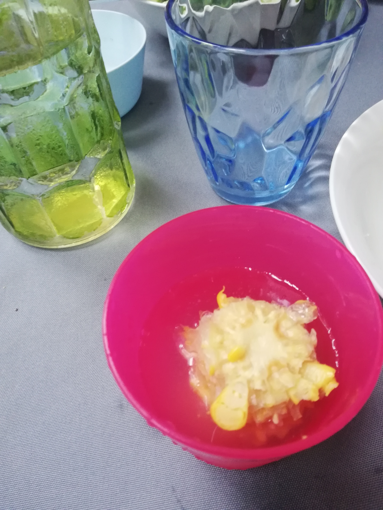

Home
Aqua-Corn

Aqua-Corn
This is a spin on a old classic, corn on the cobb, but be sure to dip it
in water frequently while consuming. Even better to drop it on the ground.
My two year old loves it!!
Ingredients Aqua-Corn
- 1 corn on the cobb
- 2 teaspoons of butter
- 1/2 teaspoon salt
- 1 medium sized glass of water
Steps
- Bring water to the boil on stove top
- Peal the corn and remove all hairs and leaves. Wash the cobb
- Cut in three or four pieces
- Blanche the conr in the boiling water for about five minutes
- Remove from the water and gently at dry on paper towel
- Add butter and salt to the corn, mix around
How to Serve
You have done all the hard work! Now, sit back and see how it is destroyed
by a toddler.
- Take a few bites of the corn
- Dip it in your drinking water
- Alternatively drop it in the water for a big splash
- Take a few more bites
- Drop it on the ground
- Take a few more bites
- Your done!